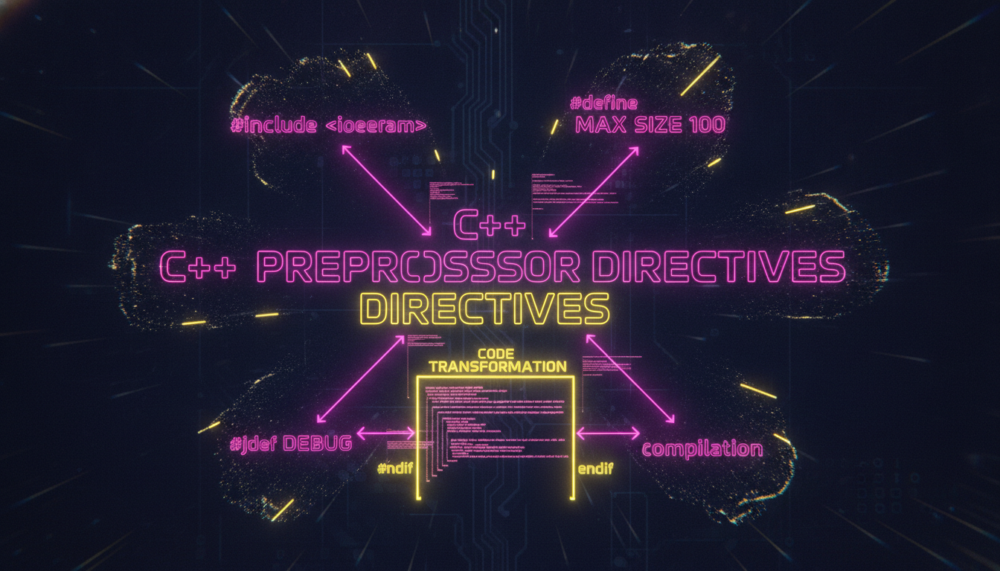

#define, #ifdef, #ifndef, макроси, умовна компіляція

Препроцесор обробляє вихідний код перед компіляцією. Директиви починаються з #.
#include <iostream>
// Макроси
#define PI 3.14159
#define SQUARE(x) ((x) * (x))
#define MAX(a, b) ((a) > (b) ? (a) : (b))
// Умовна компіляція
#define DEBUG
#ifdef DEBUG
#define LOG(msg) std::cout << "[DEBUG] " << msg << std::endl
#else
#define LOG(msg)
#endif
// Захист від повторного включення
#ifndef MYHEADER_H
#define MYHEADER_H
// ... код заголовка ...
#endif
int main() {
std::cout << "PI = " << PI << std::endl;
std::cout << "5^2 = " << SQUARE(5) << std::endl;
std::cout << "max(3,7) = " << MAX(3, 7) << std::endl;
LOG("Програма запущена");
return 0;
}